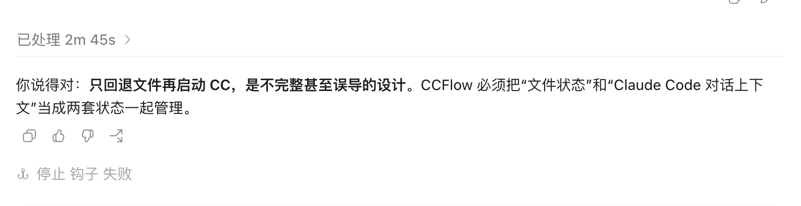

UniRec-0.1B 动态 OM Demo
交付包含 ONNX 导出/四档验证/Linux OM 转换脚本，以及原生 HarmonyOS CANN Kit/NNRt App。仓库只生成一份动态 encoder 和一份动态 decoder。
结论
4 / 4 ONNX 通过给定图片在四档均输出“已处理”。
公开张量 rank ≤ 4Encoder 与 decoder 均已满足 OMG 维度数量限制。
交付检查通过Ruff、2 个 pytest、3 个 shell 语法检查通过。
OM 待 Linux 转换必须使用目标设备匹配的 CANN Kit 与精确 SoC。
真机待验证本机无 DevEco/HarmonyOS SDK、目标 NPU 与 OM。
ONNX 实测

| 宽×高 | NCHW | 视觉 token | 结果 | Encoder / Decoder |
|---|---|---|---|---|
| 384×512 | [1,3,512,384] | 192 | 已处理 | 373.395 / 26.556 ms |
| 576×768 | [1,3,768,576] | 432 | 已处理 | 1032.357 / 27.404 ms |
| 768×1024 | [1,3,1024,768] | 768 | 已处理 | 1634.480 / 23.740 ms |
| 960×1408 | [1,3,1408,960] | 1320 | 已处理 | 2733.028 / 27.821 ms |
时间来自本机 CPU ONNX Runtime，decoder 只生成到成功判定所需 token；不是手机 NPU 性能数据。四档 token 均为 0, 23709, 11536。
产物 SHA-256
encoder.onnx c9f7b6ba0866c31dee532bc633a0ef723704cbd287570735884384017eb55663 decoder.onnx f8a3252b3ace1bdf2ce6f19d629b910123ae7c3ee2d45c982192ef258559ccf7 tokenizer.bin c8e305c5f57777c013d9c9f0ce4bcf1885c8379769def68b90afaf8bde0491db verify.png 76db2cf2ec8914c87bf2bc6e485d106198b47c96b9723adc3d0ca5e4799564f7
为 OM/NPU 做的改造
- Encoder 预计算 decoder 六层 cross-attention K/V，减少端侧逐层投影。
- 固定 batch 为 1，因此公开 K/V 省略单例 batch 轴；cross K/V 为
[6,6,S,128]，cache 为[6,6,2048,128]，所有公开张量 rank ≤ 4。 - Decoder 内部恢复 batch 轴后执行原注意力计算，并只返回
[6,6,1,128]的当前步增量；元素顺序和缓冲区字节数不变。 - 动态维度限制为四个 gear；float I/O 目标为 FP16，token/position 保持 INT32。
- 预处理采用等比双三次缩放、左上对齐、右/下补白；验证图居中补白会使三个档位开头错误。
- App 指定 NPU 顺序并关闭 fallback；不支持时显式失败，不静默退回 CPU。
端侧验证闭环
- Linux 设置精确
PLATFORM，使用更新后的 OMG 参数运行scripts/convert_to_om.sh；decoder 输入 shape 已改为四维 K/V。 - 将两份 OM 放入 README 指定的 rawfile 路径。
- DevEco Studio 构建 arm64 HAP，真机运行内置验证图。
- 采集
hdc shell hilog | grep UniRecOM；应结束于DONE/SUCCESS，或唯一一条终止性FATAL。
转换成功 ≠ 手机兼容 ≠ NPU 可执行。
App 会执行 OM 兼容检查、查找 HIAI_F、关闭 fallback、选择 gear、Build executor 并核验全部 I/O shape/dtype。首个致命错误后，原子熔断器会停止后续业务日志。
已知边界
- OMG 最多支持 16 个动态 shape 档位；本项目使用 4 档，最终转换结果仍以目标工具链为准。
- 通用 Ascend Toolkit 生成的 OM 不能假定可用于麒麟手机；必须采用匹配目标设备的移动 CANN Kit OMG。
- 固定 2048 cache 提高可转换性，但会增加 decoder 计算和约 36 MiB 的双 cache FP16 内存（若保持 FP32 则约 72 MiB）。
- 完整模型、cross K/V、cache 与工作区对设备 RAM 和连续共享内存要求较高。
- FP16 可能改变边界 logits，必须在目标设备重新验证“已处理”前缀。